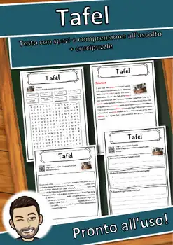
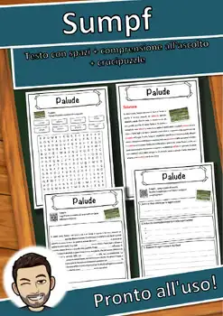

General Knowledge Worksheets
1213 printable General Knowledge worksheets (PDF) with answer keys: reading comprehension passages, reading trails and more – no prep, filter by grade.
1,213 resources
Grade
By grade: 5th Grade · 9th Grade

Family Life Reading Comprehension Passages | Life Skills Scavenger Hunt 5-6

La francophonie – French Reading BUNDLE | French-Speaking World Fiches

Valentine's Day & Kindness Reading BUNDLE | Friendship, Respect & SEL

Traum – Italian Reading Comprehension Worksheet (Scheda): Cloze & Listening

Tosse – Italian Reading Comprehension Worksheet (Scheda): Cloze & Listening

Torre – Italian Reading Comprehension Worksheet (Scheda): Cloze & Listening

Torbiera – Italian Reading Comprehension Worksheet (Scheda): Cloze & Listening

Torace – Italian Reading Comprehension Worksheet (Scheda): Cloze & Listening

Tolleranza – Italian Reading Comprehension Worksheet (Scheda): Cloze & Listening

Titanic – Italian Reading Comprehension Worksheet (Scheda): Cloze & Listening

Titan – Italian Reading Comprehension Worksheet (Scheda): Cloze & Listening

Tiroide – Italian Reading Comprehension Worksheet (Scheda): Cloze & Listening

Thunnus – Italian Reading Comprehension Worksheet (Scheda): Cloze & Listening

Testo – Italian Reading Comprehension Worksheet (Scheda): Cloze & Listening

Testa – Italian Reading Comprehension Worksheet (Scheda): Cloze & Listening

Talebani – Italian Reading Comprehension Worksheet (Scheda): Cloze & Listening

Teoria – Italian Reading Comprehension Worksheet (Scheda): Cloze & Listening

Teologia – Italian Reading Comprehension Worksheet (Scheda): Cloze & Listening

Temporale – Italian Reading Comprehension Worksheet (Scheda): Cloze & Listening

Tempesta – Italian Reading Comprehension Worksheet (Scheda): Cloze & Listening

Tempel – Italian Reading Comprehension Worksheet (Scheda): Cloze & Listening

Telescopio – Italian Reading Comprehension Worksheet (Scheda): Cloze & Listening

Telefono – Italian Reading Comprehension Worksheet (Scheda): Cloze & Listening
Taglia – Italian Reading Comprehension Worksheet (Scheda): Cloze & Listening

Tafel – Italian Reading Comprehension Worksheet (Scheda): Cloze & Listening
Suono – Italian Reading Comprehension Worksheet (Scheda): Cloze & Listening

Sumpf – Italian Reading Comprehension Worksheet (Scheda): Cloze & Listening
Sumerer – Italian Reading Comprehension Worksheet (Scheda): Cloze & Listening
Studente – Italian Reading Comprehension Worksheet (Scheda): Cloze & Listening

Strandkorb – Italian Reading Comprehension Worksheet (Scheda): Cloze & Listening

Stomaco – Italian Reading Comprehension Worksheet (Scheda): Cloze & Listening

Steuer – Italian Reading Comprehension Worksheet (Scheda): Cloze & Listening

Stato – Italian Reading Comprehension Worksheet (Scheda): Cloze & Listening

Stampa – Italian Reading Comprehension Worksheet (Scheda): Cloze & Listening

Spirito – Italian Reading Comprehension Worksheet (Scheda): Cloze & Listening

Spaghetti – Italian Reading Comprehension Worksheet (Scheda): Cloze & Listening

Souvenir – Italian Reading Comprehension Worksheet (Scheda): Cloze & Listening

Sorgente – Italian Reading Comprehension Worksheet (Scheda): Cloze & Listening

Slovacchia – Italian Reading Comprehension Worksheet (Scheda): Cloze & Listening

Slavi – Italian Reading Comprehension Worksheet (Scheda): Cloze & Listening

Skelett – Italian Reading Comprehension Worksheet (Scheda): Cloze & Listening

Skateboard – Italian Reading Comprehension Worksheet (Scheda): Cloze & Listening

Sigillo – Italian Reading Comprehension Worksheet (Scheda): Cloze & Listening

Sioux – Italian Reading Comprehension Worksheet (Scheda): Cloze & Listening

Singhiozzo – Italian Reading Comprehension Worksheet (Scheda): Cloze & Listening

Singapore – Italian Reading Comprehension Worksheet (Scheda): Cloze & Listening

Sindacato – Italian Reading Comprehension Worksheet (Scheda): Cloze & Listening

Sillaba – Italian Reading Comprehension Worksheet (Scheda): Cloze & Listening
No resources found – try a different search term or filter.